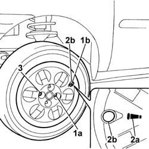

4450B80 cap of one wheel - r+r
- Path
- Procedures > 44 SUSPENSION AND WHEELS > 4450 WHEELS AND HUBS > 4450B wheels and components > 4450B80 cap of one wheel - r+r
- Kind
- repair procedure (removal / refitting; the operation number is the code)
- Applies to
- all engines; all production periods
- Interactive page
- https://sloeber94.github.io/elrnDB-fDbl/en/#/2584777
Applies to: all engines; all production periods
 Removing
Removing
 Refitting
RefittingPosition the vehicle on a lift.
Undo the fixing bolts and remove the wheel, complete with hub cap.
Applies to: all engines; all production periods
Refitting
Removing1. Fit the wheel and fit the first bolt (1a) in the opening closest to the inflation valve (1b).
2. Fit the hub cover, ensuring that the symbol (2a) on the rear of the cover coincides with the inflation valve so that the valve protrudes through the opening (2b).
3. Fit the remaining bolts without tightening them fully.

Applies to: all engines; all production periods
Lower the vehicle so that the wheels rest on the ground.
Tighten the steel rimmed wheel bolts to the recomended torque.
 | Fastening | Component | Ø | Value (daNm) |
|---|---|---|---|---|
- | Bolt | FRONT WHEEL FIXING BOLT | M10 x 1.25 | (alloy wheel) 8.6 |
Remove the vehicle from the lift.